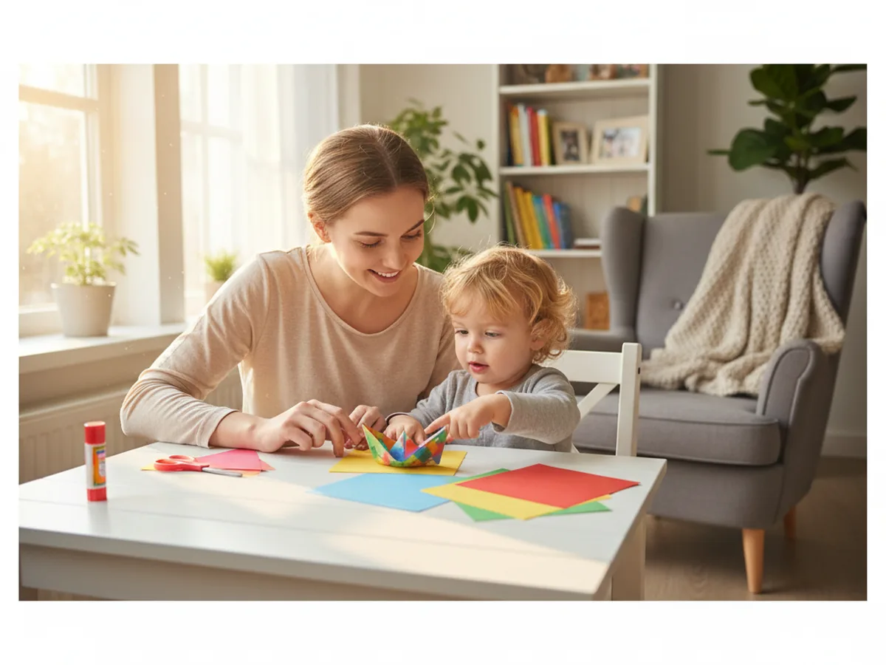
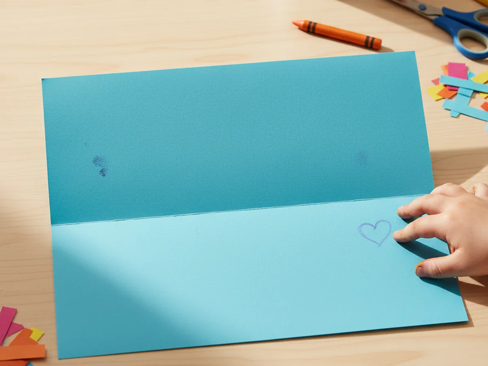
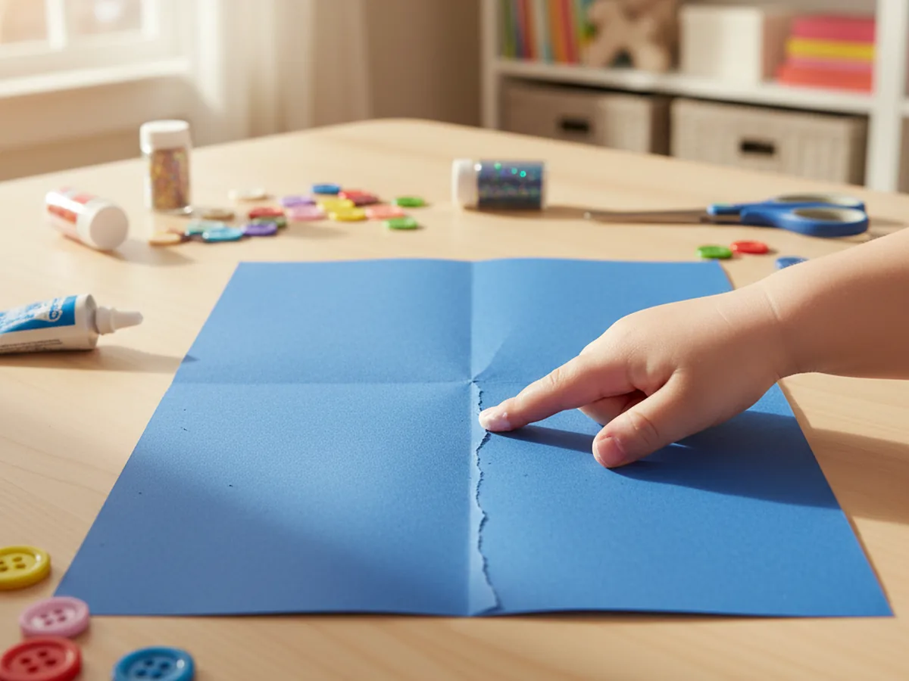
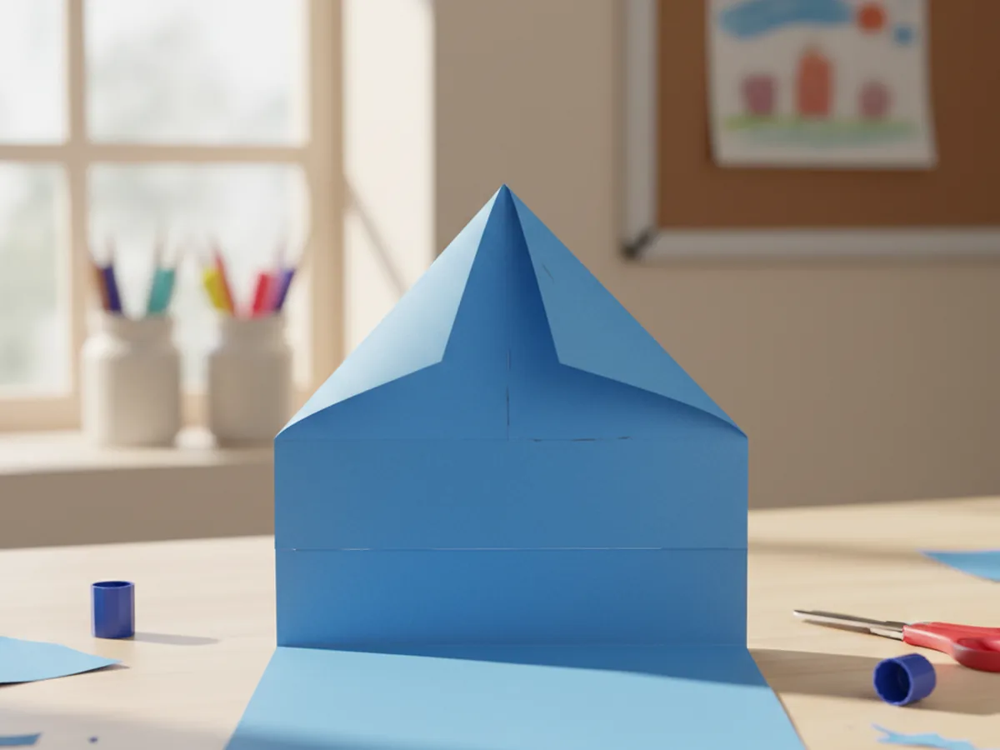
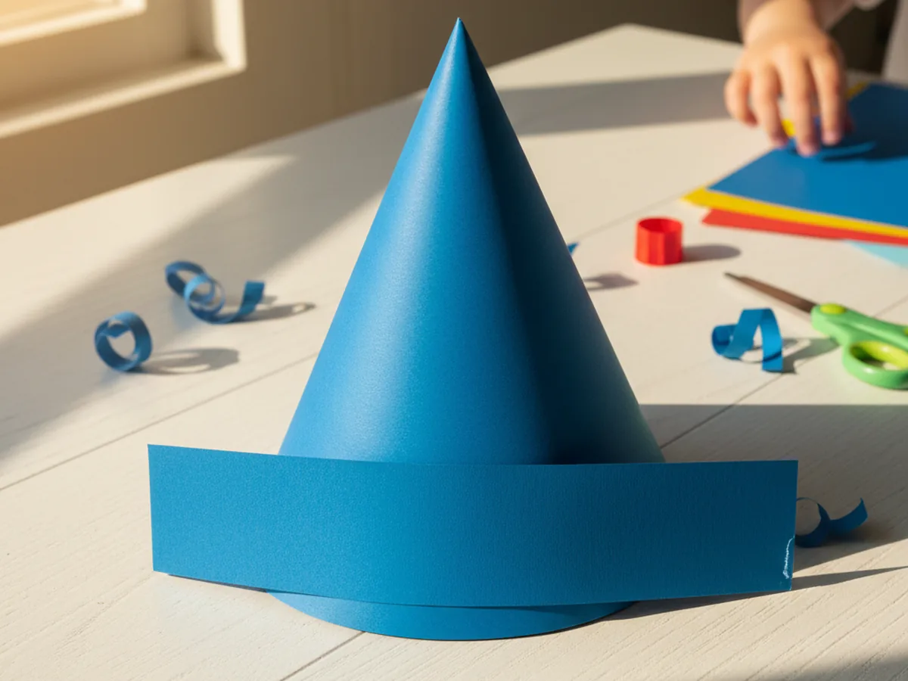
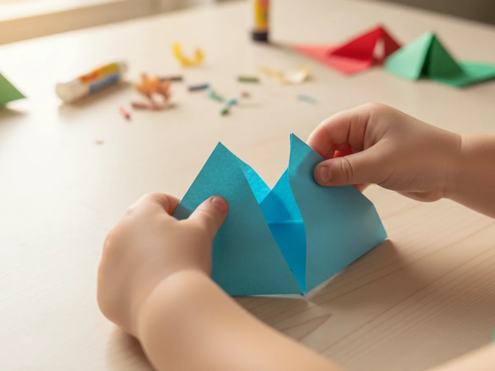
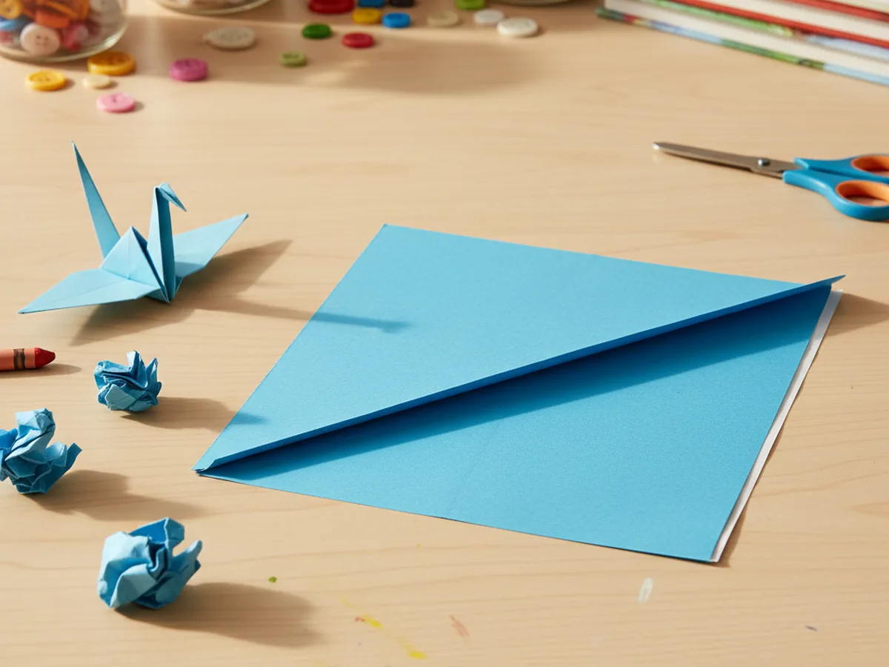
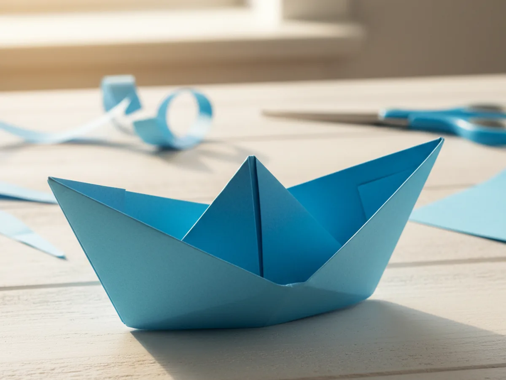

There is something genuinely magical about folding a flat piece of paper into a little boat that holds its shape and stands up on its own. This paper boat craft is one of those timeless activities that surprises kids every single time, and it never gets old. No scissors, no glue, no paint required. Just a sheet of paper, a few careful folds, and a child who is ready to be amazed. ⛵
The steps look trickier than they are. Once you do it together a couple of times, both you and your child will have it memorized. There is real satisfaction in that moment when the boat pops open and reveals itself, and kids almost always ask to make another one right away.
Why Kids Love This Craft
The paper boat craft belongs to that special category of activities where the process itself feels like a little adventure. Each fold changes the shape in a surprising way, and children stay genuinely curious about what comes next. The suspense builds step by step, and when the final shape emerges as a real boat, the reaction is always wonderful. 🌊
This craft also builds patience and concentration without feeling like work. Each fold requires a bit of care and precision, and children learn to slow down, follow a sequence, and handle materials gently. These are exactly the kinds of quiet skills that benefit kids in school and in daily life, all wrapped up in something that feels purely like play.
Once the boat is finished, it becomes a toy. Kids love naming their boats, racing them along the kitchen table, or testing whether they float in the bathtub. The craft does not end when the last fold is made, it just turns into a new game. That combination of making and playing is what makes this paper boat craft for kids so special.

What You'll Need
One of the best things about this paper boat craft is how little you need to get started. Here is the full list.
- Double-Sided Colored Origami Paper (200 sheets, 20 colors), bright colors make the finished boats look extra cheerful.
- Crayola Construction Paper (240 sheets, assorted colors), a great alternative if you prefer larger boats from full sheets.
- Crayola Broad Line Washable Markers (12 count), for decorating the finished boat with names, waves, or patterns.
- Mod Podge Gloss Sealer (16 oz), optional, brush over the finished boat if you want it to hold up in water for a few minutes.
Step-by-Step Instructions
Follow these steps slowly the first time and your child will have a beautiful paper boat in about 15 minutes. Take it one fold at a time.
Step 1: Fold the Paper in Half
Take your sheet of paper and fold it in half by bringing the top edge down to meet the bottom edge. This is sometimes called a hamburger fold. Press the crease firmly along the full length of the fold so you get a clean, flat rectangle. For your first paper boat craft, a standard letter-size sheet works beautifully, but you can also use a square piece of origami paper for a smaller, more delicate boat.

Step 2: Mark the Center and Unfold
Take the folded rectangle and fold it in half again from left to right. Make a gentle crease, then unfold it back to the full rectangle. You now have a faint vertical line running down the center of the paper. This center crease is your guide for the next step, so make sure it is visible before moving on.

Step 3: Fold the Top Corners to the Center
Take both top corners of the folded rectangle and fold them down toward the center crease so that both corners meet neatly at the middle. Press both folds flat. You will now have a triangle shape at the top of the paper, with a strip of paper still visible below the triangle. This shape looks a bit like a little paper hat, and kids almost always try to put it on their heads at this point.

Step 4: Fold the Bottom Strips Up
Take the strip of paper at the bottom on the front side and fold it upward over the base of the triangle. Crease it firmly so it lies flat. Now flip the whole shape over and fold the other bottom strip upward on the back side in the same way. When you are done, you should have a shape that looks like a paper hat or a small crown with a point at the top.

Step 5: Open and Flatten into a Square
This is the most satisfying step in the whole paper boat craft. Hold the paper hat shape with one hand on each side, fingers tucked gently into the open bottom. Slowly pull the two sides apart while also pressing down on the top and bottom corners. The shape will open up and flatten down into a square. Press it flat so all four corners are sharp and the square is neat. Young children may need a little help with this one since it requires gently pulling in two directions at once.

Step 6: Fold the Bottom Corner Up
Take the bottom point of the square and fold it up to meet the top point on the front side. Press the fold flat so you have a clean triangle. Flip the whole shape over and do exactly the same on the back, folding the bottom point up to meet the top. You now have a flat triangle again, but this one is sturdier and feels different from earlier triangles because of all the layers inside.

Step 7: Open and Shape into Your Boat
Hold the two bottom corners of this final triangle and gently pull them apart sideways, just like you did in step 5. The shape will begin to stretch open and, with a little gentle coaxing, it will reveal the classic paper boat shape. Pull the sides apart until the boat opens fully, then gently press the bottom flat so the boat stands up on its own. There it is, a real paper boat! 🎨
If the boat does not stand perfectly at first, simply press the bottom crease more firmly to give it a flat base. A few extra seconds of gentle shaping always does the trick.

Variations to Try
Decorated Paper Fleet: Once your child has the basic paper boat craft technique down, make five or six boats in different colors and let them decorate each one with markers. Draw waves, fish, anchors, or their name in big letters. Line the whole fleet up on a windowsill and it makes the most cheerful little display.
Two-Tone Boat: Use a sheet of double-sided origami paper with a different color on each side. As you fold, both colors peek through in different sections, creating a naturally striped or two-toned boat without any extra effort. This version looks especially striking and is a lovely way to introduce children to the idea of folding as design.
Bathtub Float Test: If you want the boat to actually float, brush a thin coat of Mod Podge Gloss over the outside surfaces of the finished boat and let it dry completely for about 30 minutes. The sealed boat will float in the bathtub for several minutes, which is more than enough time for a very excited small person to test it thoroughly. A fully unsealed paper boat will also float briefly if you test it gently right after folding.
Final Thoughts
This paper boat craft is one of those rare activities that gives you a big result from something incredibly small and simple. One sheet of paper, 15 minutes, and you have a finished boat that delights kids every time. There is no cleanup, no drying time, and nothing that can really go wrong. Just folding, laughing, and that lovely feeling of making something together from scratch. ❤️
Once your child knows how to make one, they will want to make the whole ocean. That is exactly the kind of crafting spark this activity is meant to light.
More Crafts You'll Love
If your little one loved this water-themed paper boat craft, these paper folding and fish crafts are wonderful next steps: